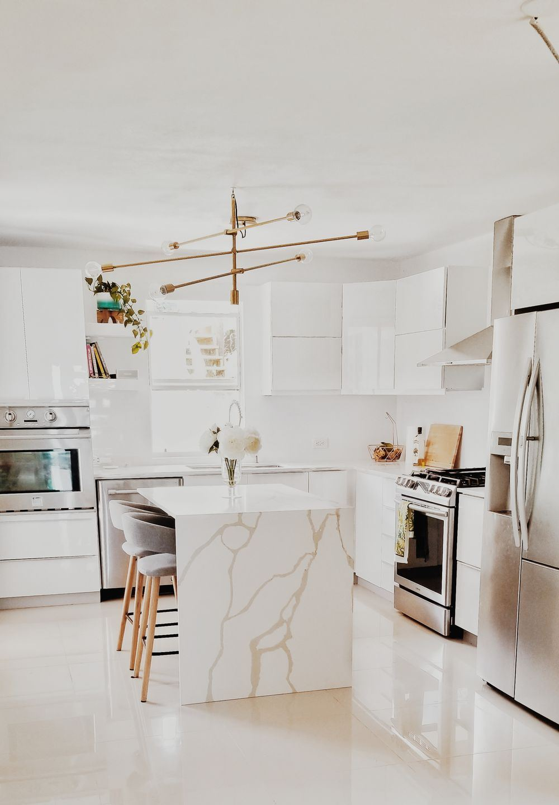

Meublé ou vide ? Le choix change la durée du bail, le public visé, le dépôt de garantie et la fiscalité. Il n'y a pas de bonne réponse unique : tout dépend de votre bien et de vos objectifs.
Les différences principales
- Durée du bail : en général trois ans pour une location vide, un an pour une location meublée (neuf mois pour un étudiant) ;
- Dépôt de garantie : un mois de loyer hors charges pour du vide, deux mois pour du meublé ;
- Préavis du locataire : trois mois pour du vide, un mois pour du meublé, avec des exceptions possibles pour du vide ;
- Équipement : un logement meublé doit comprendre un mobilier minimum fixé par décret (literie, plaques de cuisson, réfrigérateur, etc.).
Qui loue quoi ?
Le meublé attire des locataires de passage : étudiants, jeunes actifs, mutations professionnelles. Il offre plus de rotation, donc plus d'occasions d'ajuster le loyer, mais aussi plus de remises en état. Le vide convient mieux à des locataires qui s'installent durablement : familles, couples, personnes qui apportent leurs meubles.
Fiscalité et rentabilité
Les deux formes ne sont pas imposées de la même façon, et le meublé peut permettre un loyer plus élevé. Mais l'investissement de départ (mobilier) et les frais de remplacement existent. Parlez-en à un expert-comptable avant de choisir, car la meilleure formule dépend de votre situation fiscale.
Le bail meublé : ses règles
Le bail meublé est conclu pour un an, renouvelable par tacite reconduction, ou pour neuf mois lorsqu'il s'adresse à un étudiant (sans reconduction obligatoire). Il doit comporter un inventaire du mobilier et un état des lieux. Le bailleur peut mettre fin au bail à son terme dans des conditions encadrées (reprise pour habiter, vente, motif légitime et sérieux), avec un préavis plus court que pour une location vide. Les loyers sont libres à la relocation sauf réglementation locale (encadrement des loyers).
Le bail vide : ses règles
Le bail d'un logement vide est conclu pour une durée de trois ans lorsque le bailleur est une personne physique. Le locataire peut le quitter à tout moment avec un préavis. Le propriétaire, lui, ne peut donner congé qu'à l'échéance du bail et pour des motifs précis. Cette stabilité convient aux propriétaires qui souhaitent peu de rotation. Le loyer peut être révisé chaque année selon un indice de référence.
Le coût de départ et l'entretien
- Meublé : budget mobilier et équipements, remplacement progressif en cas d'usure, linge de maison à la charge du locataire ;
- Vide : peu d'investissement initial, mais un renouvellement des peintures et des sols à prévoir entre deux locataires ;
- Dans les deux cas : travaux d'entretien, taxe foncière, charges non récupérables, assurance propriétaire non occupant.
Fiscalité : un choix à étudier
La location vide relève en général des revenus fonciers, tandis que la location meublée relève des bénéfices industriels et commerciaux, avec des régimes simplifiés ou réels. Selon votre situation, l'un des régimes peut s'avérer plus avantageux. Ces règles sont techniques et changent : faites-vous conseiller par un expert-comptable ou un conseiller fiscal pour comparer, avant de signer un bail.
Comment décider
Posez-vous trois questions : quel type de locataire visez-vous, quelle durée de location souhaitez-vous, quel budget pouvez-vous investir au départ ? Un petit logement proche d'une université ou d'un centre d'affaires se prête bien au meublé. Un logement familial dans un quartier résidentiel convient souvent mieux au vide. Un conseiller local vous aide à analyser la demande dans votre quartier et à choisir la formule la plus adaptée.
Questions fréquentes
Quel mobilier est obligatoire pour un meublé ?
Un décret fixe la liste minimale : literie, occultation des fenêtres, plaques de cuisson, four ou micro-ondes, réfrigérateur, vaisselle, table et sièges, rangements, luminaires et matériel d'entretien.
Peut-on passer du vide au meublé ?
Oui, à la fin d'un bail ou lors d'un changement de locataire, en équipant le logement du mobilier requis. Parlez-en à un conseiller et à un expert-comptable avant de vous lancer.
Peut-on louer meublé dans n'importe quelle copropriété ?
En principe oui, mais le règlement de copropriété peut contenir des clauses particulières (location de courte durée, destination des lots). Vérifiez-le avant de vous lancer.
Le loyer d'un meublé peut-il être plus élevé ?
Souvent, en raison du mobilier et de la souplesse offerte au locataire. Mais le loyer reste encadré dans certaines zones : renseignez-vous sur les règles applicables à votre ville.
Cet article donne des repères généraux et ne remplace pas un conseil personnalisé. Les règles évoluent : demandez à un conseiller de vérifier votre situation.
Un bien à louer ?
Recherche du locataire, bail, état des lieux, suivi : une gestion locative à partir de 39,99 € par mois.